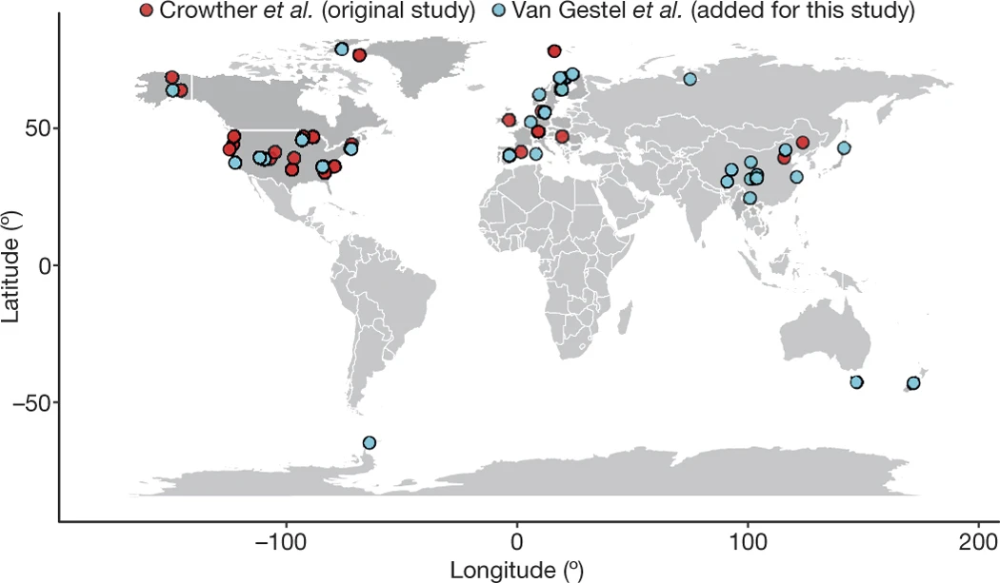
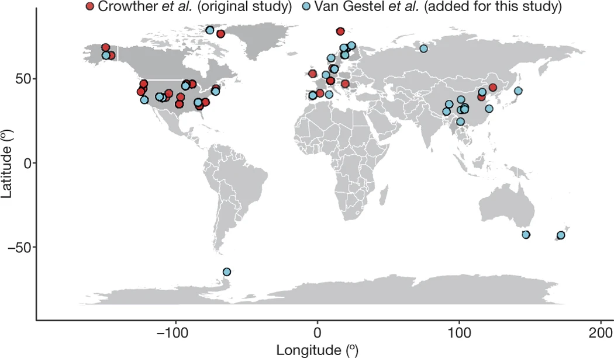

Research Themes


 


Ecosystem Responses to Environmental Change: field experiments and data synthesis
Plant productivity and soil respiration represent the two largest carbon fluxes entering and leaving ecosystems. Their balance determines ecosystem carbon sequestration under climate change. Using long-term manipulative experiments and global meta-analysis, my research quantifies plant and soil mechanisms controlling ecosystem responses to environmental change.
In a tallgrass prairie experiment, warming and hay harvest altered plant community composition and diversity (Shi et al. 2015 Journal of Ecology), which increased productivity stability (Shi et al. 2016 Nature Communications) and amplified soil respiration responses to warming (Xu & Shi et al. 2015 GCB). Together these shifts produced ecosystem carbon neutrality (Shi et al. 2015 Ecosphere).
Additional experiments revealed strong productivity responses to altered precipitation but limited sensitivity to warming (Shi et al. 2018 GCB), while soil carbon stocks remained stable (Xu# & Shi# et al. 2016 GCB).
To extend experimental understanding globally, I conducted syntheses showing grassland sensitivity to precipitation extremes (Wilcox# & Shi# et al. 2017 GCB), asymmetric drought responses across biomes (Shi et al. 2014 Biogeosciences), and no universal warming-induced soil carbon sequestration (van Gestel & Shi et al. 2018 Nature).
Soil Carbon Persistence and Dynamics: Data-Driven Modeling and Upscaling
This research theme integrates global datasets, radiocarbon observations, and machine learning to reduce uncertainty in soil carbon projections. Comparisons among soil carbon models demonstrated large divergence in predicted carbon sequestration trajectories (Shi et al. 2018 Nature Communications).
We compiled global soil radiocarbon datasets (Lawrence … Shi et al. 2020 ESSD) and produced global ML-upscaled radiocarbon maps (Shi et al. 2020 Nature Geoscience), revealing systematic ESM overestimation of soil carbon sequestration.
Recent work demonstrates hidden inconsistencies among converging Earth system models (Shi et al. 2024 AGU Advances) and shows carbon use efficiency dominates global soil carbon storage (Tao … Shi et al. 2023 Nature).
Machine Learning–Enabled Model Benchmarking and Development
We develop deep learning emulators of land carbon models to diagnose structural errors across Earth system model ensembles (Shi et al. 2024 AGU Advances). Coupled neural network architectures integrate feed-forward NNs with LSTM networks to capture temporal carbon dynamics.
Machine Learning for Microbial Biome Analysis and Ecosystem Modeling
Machine learning enables prediction and interpretation of complex microbial community dynamics using CNNs, RNNs, transformers, and explainable AI approaches such as SHAP and LIME. This work integrates microbial processes into ecosystem carbon models, bridging microbial ecology, statistics, and Earth system science.